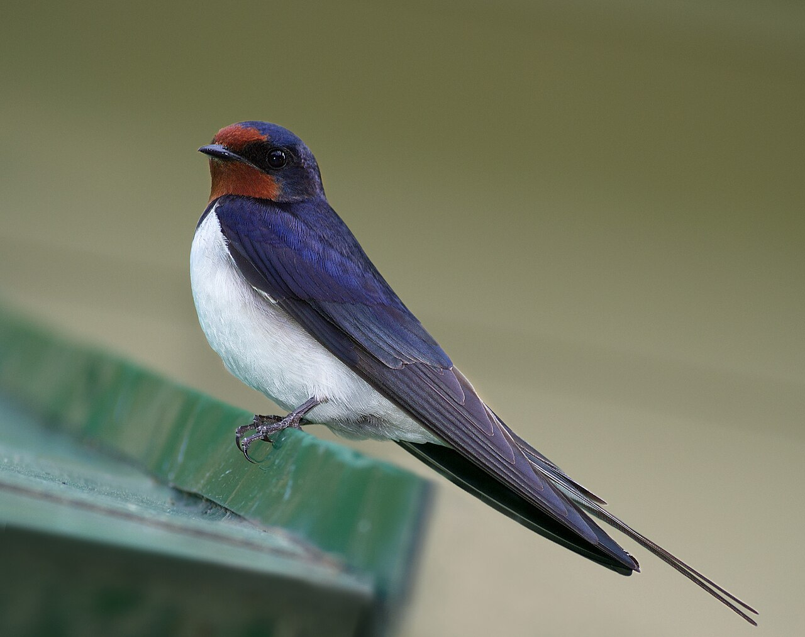

    <a href="https://upload.wikimedia.org/wikipedia/commons/3/33/%D0%94%D0%B5%D1%80%D0%B5%D0%B2%D0%B5%D0%BD%D1%81%D0%BA%D0%B0%D1%8F_%D0%BB%D0%B0%D1%81%D1%82%D0%BE%D1%87%D0%BA%D0%B0_%28Hirundo_rustica%29%2C_%D0%9C%D0%B5%D0%BB%D0%B8%D1%85%D0%BE%D0%B2%D0%BE.jpg">ツバメ</a> © 2023/6/10 by <a href="https://commons.wikimedia.org/w/index.php?title=User:Dion_Art&action=edit&redlink=1">Dion Art </a> is licensed under <a href="https://creativecommons.org/licenses/by-sa/4.0/">CC BY-SA 4.0</a>
    
